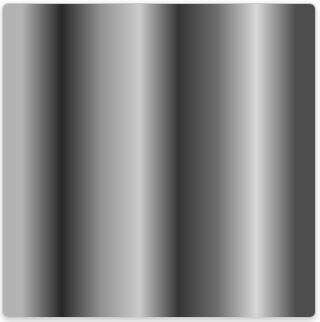
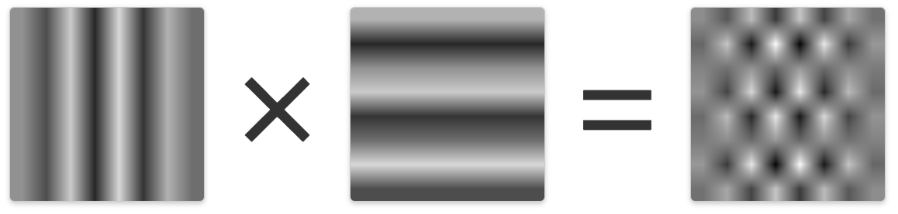
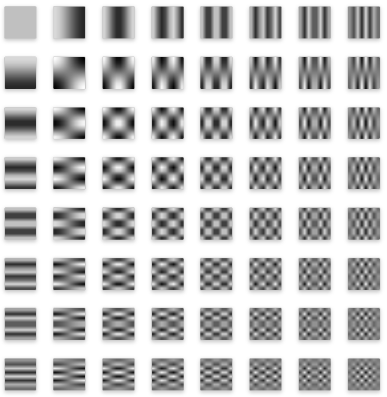
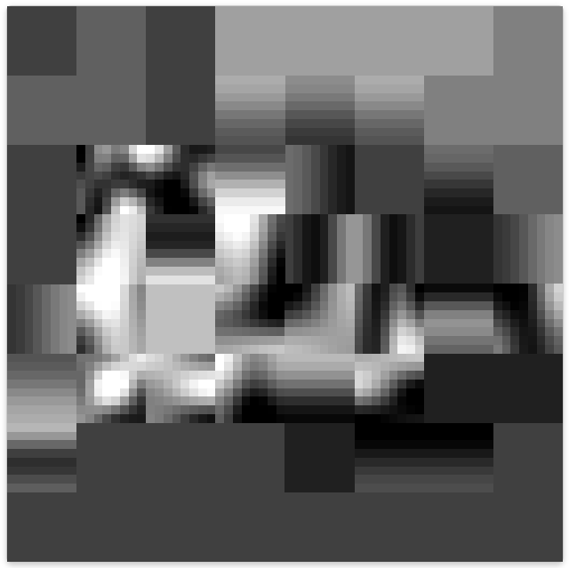

JPEGs
你知道傅立叶变换除了可以表达简单的手绘线条，还可以用于图像吗？ 事实上，我们一直都在使用它，因为这就是JPEG的工作原理！我们将相同的原理应用于图像 —— 将某些东西分成一堆正弦波，然后只存储重要的东西。
要处理图像，我们需要一种不同类型的正弦波。我们需要这样的一种“正弦波”：无论我们有什么样的图像，我们都可以添加一堆这些正弦波来回到原始图像。
要做到这一点，我们使用的每个正弦波也将是一个个小图像。我们现在使用一些黑白条纹的小图像，这些更可以表达为“线”，而不是波。为了表示“波”的大小，每个图像将具有或多或少的明暗对比。
我们也可以以类似的方式表示出颜色，但我们先从灰度图像开始玩。为了表示灰度图像，我们需要一些水平的波图案，
还有一些垂直的波图案。

就其本身而言，只有水平和垂直图像还不足以表达出我们可以看到的图像。我们还需要一些额外的图案，将两者相乘。

要得到一个8x8分辨率的图像，这里是我们需要的所有小图案。

如果我们把这些小图案的对比度调整到适当的值，然后将它们相加，我们就可以得出任意图像。
让我们从一个字母"A"开始。它非常小，但我们需要它很小，否则我们最终会得到太多其他的图像。
随着我们添加越来越多的这些图案，我们最终得到的东西越来越接近实际图像。我觉得你只要添加很少一部分图案，就能看出字母“A”的样子来。
 对于实际的JPEG图像来说，这就是基本原理，剩下的只有一些额外的细节。
对于实际的JPEG图像来说，这就是基本原理，剩下的只有一些额外的细节。
图像被分解为8x8块，每个块分别进行分解。我们使用一组频率来确定每个像素的亮度或暗度，然后是另外两组用于颜色，一组用于红绿色，另一组用于蓝黄色。我们为每个块使用的频率个数决定了JPEG图像的品质。
这是一个实际的JPEG图像，放大后我们可以看到细节。当我们改变JPEG品质水平时，可以观察出画质的区别。

JPEG部分用来解释的图片可以参考这个由Jupyter Notebook转换而成的html文档：dct.html。当然，你也可以参考原网页作者的github。
总结
让我们回顾一下：
傅里叶变换让我们输入一个事物，并将其分解为不同频率的成分
频率告诉我们有关数据的一些基本属性
并且可以通过仅存储重要的成分来压缩数据
我们还可以用傅里叶变换的原理，通过一堆圆圈制作看起来很酷的动画
这只是表面上的一些浅层次应用。傅里叶变换是一个非常强大的工具，因为将事物分解成不同频率是十分重要的分析方法。它们被用于许多领域，包括电路设计，移动网络信号，磁共振成像（MRI）和量子物理！
一些问题
你已经了解了一些傅里叶变换——尤其是FFT的数学原理，并通过该模块的文档查看了一些简单的图形示范。如果你对它的数学原理很感兴趣，可以用以下这些问题来帮助你巩固或研究：
你如何在数学上表示傅里叶变换？
连续时间傅立叶变换和离散时间傅立叶变换之间有什么区别？
你如何计算傅里叶变换？
你如何对整首歌曲进行傅里叶变换？ （不仅仅是单个音符）
拓展阅读
要了解更多信息，你可以看看这些非常好的资源：
An Interactive Guide To The Fourier Transform从数学角度更加深刻地介绍傅里叶变换。
But what is the Fourier Transform? A visual introduction.3Blue1Brown 制作的视频，从音频的角度解释傅里叶变换的数学原理。
A Tale of Math & Art: Creating the Fourier Series Harmonic Circles Visualization另一篇不错的文章，从线性代数的角度解释如何用周转圆来画出形状。
傅里叶变换（维基百科）当然，维基百科的解释也很不错。